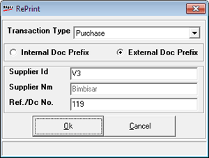

Enter the necessary transaction information regarding the entry to be reprinted.
Transaction Type: Select the transaction type from the dropdown box
Internal Doc Prefix/ External Doc Prefix: Select the type of document prefix, i.e., internal or external
Doc Prefix: Select the document prefix from the list
Doc No.: Enter the document number
When you select External Doc Prefix, the captions of the fields whose values are to be entered will vary based on the transaction type selected, as shown.

Enter the code and name of the Customer / Chain Store / Supplier as the case may be. Enter the document number to be reprinted, in Ref./Dc No.